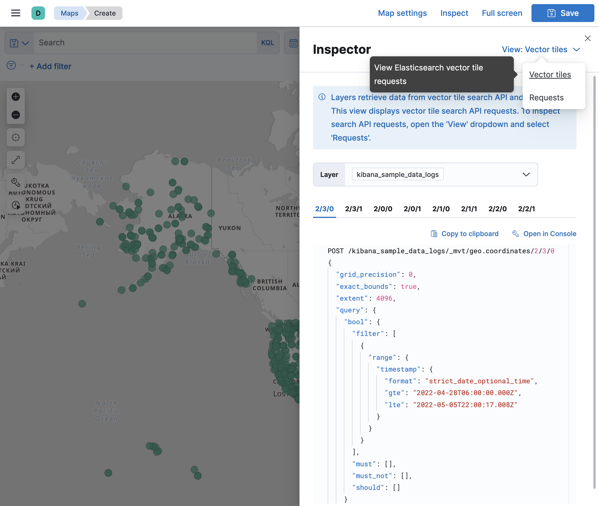
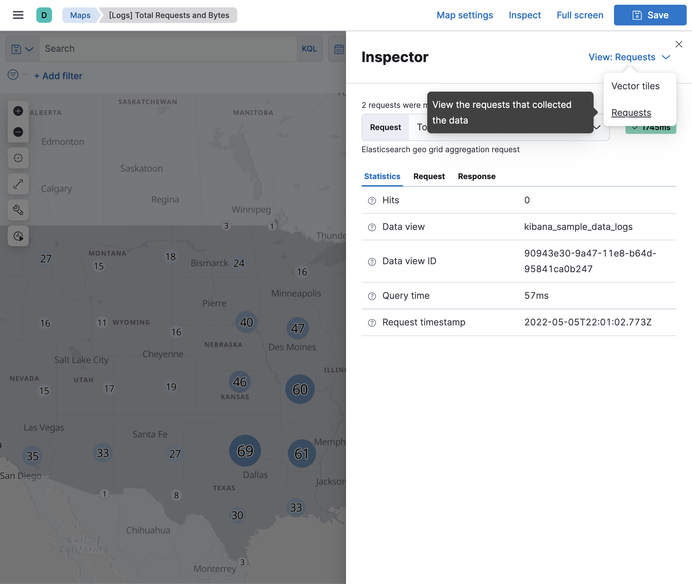

Troubleshoot Maps
editUse the information in this section to inspect Elasticsearch requests and find solutions to common problems.
Inspect Elasticsearch requests
editMaps uses the Elasticsearch vector tile search API and the Elasticsearch search API to get documents and aggregation results from Elasticsearch. Use Vector tiles inspector to view Elasticsearch vector tile search API requests. Use Requests inspector to view Elasticsearch search API requests.


Solutions to common problems
editData view not listed when adding layer
edit-
Verify your geospatial data is correctly mapped as geo_point or geo_shape.
-
Run
GET myIndexName/_field_caps?fields=myGeoFieldNamein Console, replacingmyIndexNameandmyGeoFieldNamewith your index and geospatial field name. -
Ensure response specifies
typeasgeo_pointorgeo_shape.
-
Run
-
Verify your geospatial data is correctly mapped in your data view.
- Open your data view in Stack Management.
-
Ensure your geospatial field type is
geo_pointorgeo_shape. - Ensure your geospatial field is searchable and aggregatable.
- If your geospatial field type does not match your Elasticsearch mapping, click the Refresh button to refresh the field list from Elasticsearch.
-
Data views with thousands of fields can exceed the default maximum payload size.
Increase
server.maxPayloadfor large data views.
Features are not displayed
edit- Use Inspector to view Elasticsearch responses. Ensure the response is not empty.
-
Ensure geometry uses the correct latitude and longitude ordering.
-
Geo-points expressed as strings are ordered as
"latitude,longitude". Geo-points expressed as arrays are ordered as the reverse:[longitude, latitude]. -
Geo-shapes expressed as geojson provide coordinates as
[longitude, latitude].
-
Geo-points expressed as strings are ordered as
- Ensure fill color and border color are distinguishable from map tiles. It’s hard to see white features on a white background.
Elastic Maps Service basemaps are not displayed
editMaps uses tile and vector data from Elastic Maps Service by default. See Connect to Elastic Maps Service for more info.
Custom tiles are not displayed
edit- When using a custom tile service, ensure your tile server has configured Cross-Origin Resource Sharing (CORS) so tile requests from your Kibana domain have permission to access your tile server domain.
- Ensure custom vector and tile services have the required coordinate system. Vector data must use EPSG:4326 and tiles must use EPSG:3857.